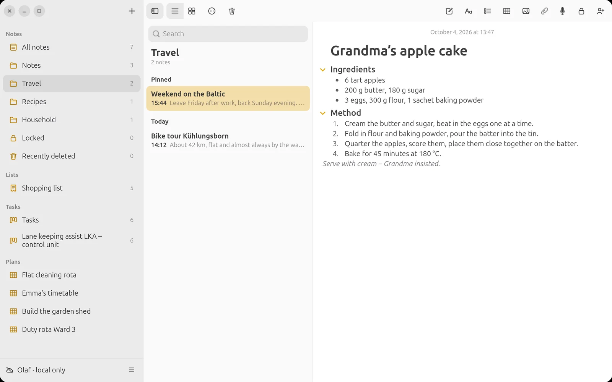
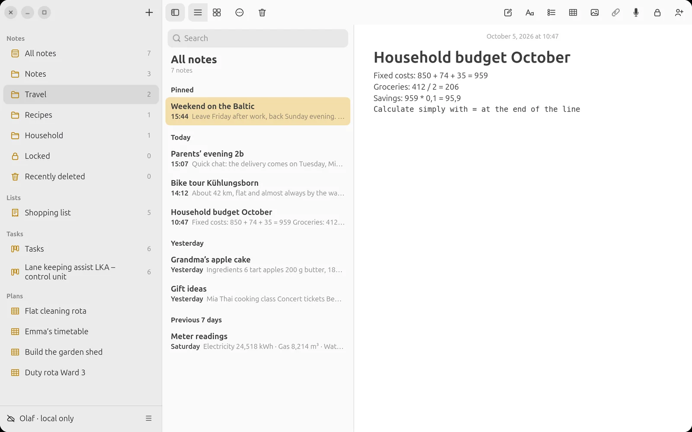
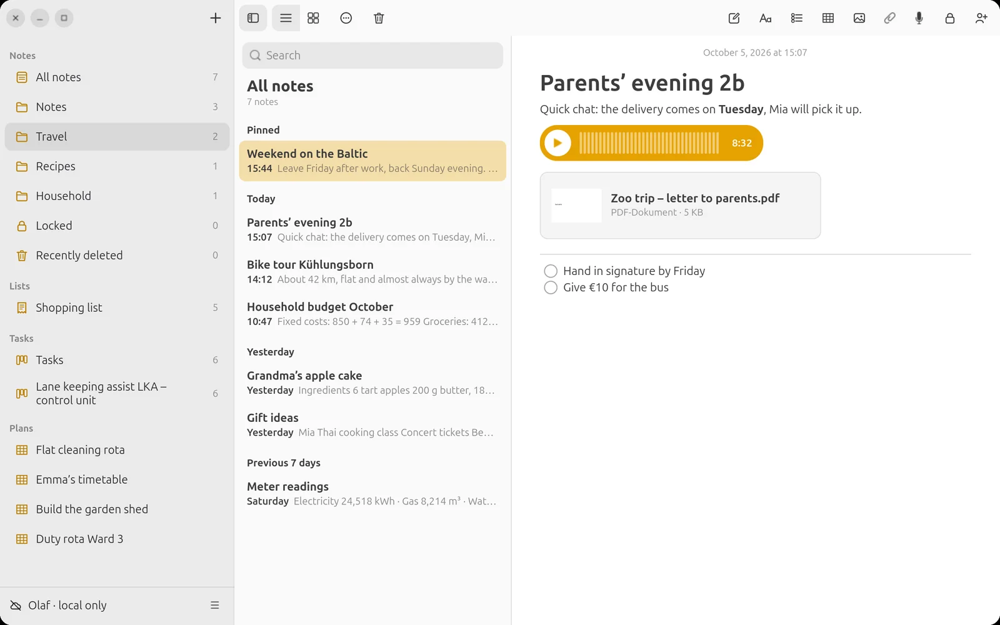
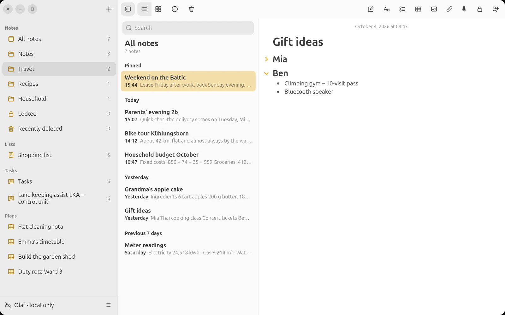
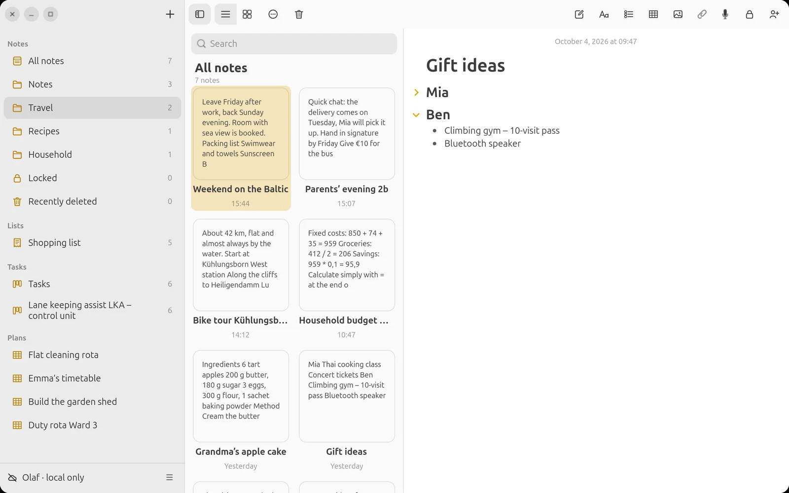

LiNotes
LiNotesFormatting
Titles, headings, bullets, numbered lists, quotes and checklists with round checkmarks, each with one tap.

Tables in Notes
Budget, packing list, comparison: insert a table, start writing, Tab to the next cell. At the end of the table the new row appears by itself.
Calculating with =
Type a calculation and an equals sign, and LiNotes writes the result after it. Decimal commas, brackets and operator precedence are respected.

Voice Recordings and PDFs
One tap on the microphone records the conversation into the note, playable on every device. Letters from school, invoices and plans sit right next to it as PDFs.

Collapse Sections
Long notes stay clear: an arrow before the heading collapses the whole section, on the phone as on the computer.

List or Gallery
As a list or a gallery, sorted by date or title, in folders and subfolders. Pinned notes stay at the top.
